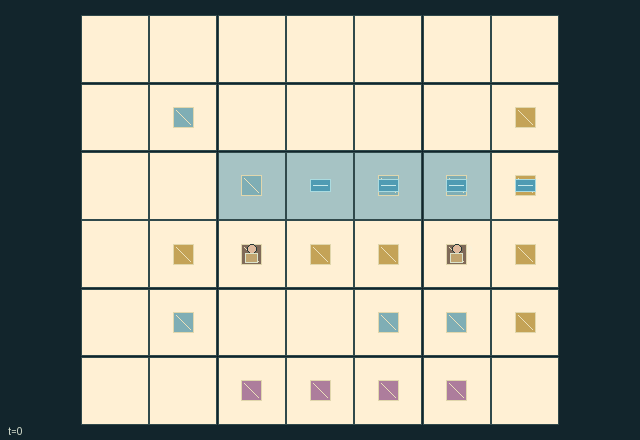
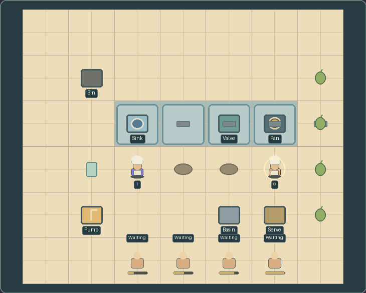

GI215 · Washwater Bistro

Original recording scope: Role 0 recorded author-action segment · Mode: Actual diagnostic replay
Additional generated state replay (different trajectory / full-state debug)

A real cooperative order

The cleaner washes and transfers a bowl; the cook prepares an ingredient, assembles soup and serves it. This recording contains 19 native transitions, with display-only animation between them. Removing the washing action prevents this order.
Play locally: run crucibles play --game 215, click Play now, select a worker and use WASD or click adjacent items. Direct controls make your other owned kitchen worker wait; switch them off to queue both actions. This first-order engineering check is not a human score or all-game acceptance.
Fulfill four physical soup orders while coordinating reusable bowls, cooking/cleaning utensils and finite-capacity clean/waste water infrastructure.
Identity and original contract
2 independently actionable roles; 16 discrete commands per role; 190 native observation columns per role; original horizon 256 steps. Declared per-step reward range: -8 to 13. Observation regime: fully_observable.
Source SHA-256: 98ded10c93949b1019e15a9c920cdd76450fe055c69fc397a19ed80905c03534
The objective, rewards, population, map and horizon remain original. A preview is not a success claim.
Objective and gameplay
Fulfill four physical soup orders while coordinating reusable bowls, cooking/cleaning utensils and finite-capacity clean/waste water infrastructure.
An upstream wash consumes shared clean water and creates sink dirt. Opening its drain moves dirty parcels toward the coworker's pan unless a physical filter or diversion catches them. Tool exchange transfers preparation and cleaning capabilities between the two workers.
- The cooking utensil prepares food; the brush washes empty bowls and scrubs the pan. Adjacent workers may exchange both reusable tools.
- Preparing, washing and assembly each use clean water; pan scrubbing uses two units. The tank holds at most twelve.
- Washing creates upstream dirt. Opening the drain sends one parcel per tick through the four physical channel cells.
- An installed filter catches up to three parcels. Diversion sends parcels into a basin of capacity three; it drains one unit every twelve ticks.
- A parcel reaching the third channel cell contaminates the cooking pan and blocks preparation/assembly until scrubbed.
- Prepared ingredients beside the pan fill clean held bowls. Served bowls return dirty at the serving station.
- Ingredients spoil at age 90; assembled soup spoils at age 18. Each customer has its own visible patience.
- The queue ends when all customers are served or have left. No script or outcome has been executed.
Ending: Natural end when each of the four customers has either been served or left after its own patience expired. H=256 is the upper truncation window; natural causes take priority.
What this game explores
Resource commons & externalities: An action changes a persistent resource or burden that another role also encounters. Compare extraction with maintenance and record the downstream resource trajectory.
Complementary production & service: A useful outcome requires ordered stages, scarce equipment or another role's capability. Measure real completed products and resource circulation rather than counting intermediate actions as success.
Joint transport & shared access: Positions, load geometry, occupancy and persistent access constrain whose action can succeed next. Distinguish physical handoff, shared controls and simultaneous force from a cosmetic cooperation label.
These are questions supported by rule structure, not observed learning effects.
Play it: operating walkthrough
crucibles play --game gi215Keep Python running and open its printed address. Select this game, set a seed and press Create session. The game itself is always English.
Assign a role range to Host with Assign / take over, or Assign all roles. Invite a second participant with Create player invitation, then assign a disjoint subset. Every original role is available.
For every owned role choose a legal command and press Queue. Arrow keys / WASD queue a declared directional action for the current role camera when available. Space or Advance one joint step advances everyone together. Non-directional games use the selectors.
Unqueued roles use the labelled untrained uniform-legal policy. Take over or release roles before the next step without resetting. Full-state debug is privileged and permanently logged; role cameras preserve permissions. Close the session to retain logs. Server restart does not restore sessions.
Complete command reference
IDs and English labels exactly match the manifest. Availability depends on role, resources, location and phase. An available action can still have no productive effect.
0·Wait
1·Walk north
2·Walk east
3·Walk south
4·Walk west
5·Pick lowest-index adjacent loose bowl, ingredient or filter
6·Put held item on current floor tile
7·Use equipped utensil: prepare held food, wash held empty bowl, or scrub pan with empty hands
8·Pump two clean-water units, or wash a held filter using two units at pump
9·Toggle upstream sink drain
10·Toggle channel diversion into holding basin beside valve
11·Install held filter beside channel valve
12·Assemble a prepared nearby ingredient into a held clean bowl; cooking utensil required
13·Serve held fresh clean soup beside serving station
14·Discard food or empty a filled bowl beside bin
15·Exchange cooking and cleaning utensils with adjacent coworker
Roles and capability identifiers
These original role names describe capabilities, not interchangeable skins. Check each owned role's legal selector before planning handoffs.
agent_0·Starts with the cooking utensil; capability follows the exchanged physical utensil
agent_1·Starts with the cleaning brush; capability follows the exchanged physical utensil
Information and observation permissions
Fully observable compact kitchen. Both roles receive identical flat native maps, actors/items/tools and holders, clean/prepared/filled/age/spoiled flags, every drainage-cell parcel, tank/sink/basin/filter/pan state, customer patience/outcomes and reward components. Inactive ingredients and completed orders remain fixed slots in observations but disappear from active scene groups.
The GIF is full-state debug and may reveal hidden entities or private state. Train on obs[agent], not the picture, state tree or another role's private row. Field slices and visibility are in the original manifest.
Reinforcement-learning integration
import jax
from crucibles_jaxmarl import make
env = make("gi215")
key = jax.random.PRNGKey(0)
key, rk, ak, sk = jax.random.split(key, 4)
obs, state = jax.jit(env.reset)(rk)
actions = env.sample_actions(ak, state)
obs, state, rewards, dones, info = jax.jit(env.step_env)(sk, state, actions)
done = dones["__all__"]Observations are float32 vectors of width 190; actions are scalar int32; masks have 16 entries. Supply all 2 roles each transition. Masked sampling is an engineering reference, not a trained learner.
step_env retains terminal data without reset. step performs outer autoreset and keeps terminal data in info["raw_state"] and info["raw_observation"]. Use dones["__all__"] for episode boundaries; separate completion, failure and time limit in analysis.
JIT or vmap equal identities and shapes. Split independent reset, policy and transition keys. Group different shapes explicitly; do not shrink the population or horizon. Host rendering stays outside training.
Training questions and fair evaluation
Define valid completion from the objective before fitting. Preserve original rewards and also report real deliveries/services, losses, resource state, unresolved episodes and per-role returns. Animation is not a reward signal.
An action changes a persistent resource or burden that another role also encounters. Compare extraction with maintenance and record the downstream resource trajectory.
A useful outcome requires ordered stages, scarce equipment or another role's capability. Measure real completed products and resource circulation rather than counting intermediate actions as success.
Positions, load geometry, occupancy and persistent access constrain whose action can succeed next. Distinguish physical handoff, shared controls and simultaneous force from a cosmetic cooperation label.
Compare memory, communication or centralized critics under matched actor information. Declare critic access; keep actor inputs role-filtered. Match partner/opponent distributions, masks, compute and checkpoint selection. Final tests never enter fitting or selection.
Independent training runs or source-pairing blocks are inferential units; episodes from one policy are not independent training replications. Save hashes, keys, versions, device, time and cost. Negative, zero, failed and indeterminate outcomes are valid. No trained checkpoint or target score is supplied.
Classification and evidence
Overlapping editorial labels are reading aids, not proof of novelty, difficulty, strategic equivalence or learning effects.
- Resource commons & externalities
- Evidence
manifest.task.objective: Fulfill four physical soup orders while coordinating reusable bowls, cooking/cleaning utensils and finite-capacity clean/waste water infrastructure.
- Evidence
manifest.task.interaction: An upstream wash consumes shared clean water and creates sink dirt. Opening its drain moves dirty parcels toward the coworker's pan unless a physical filter or diversion catches them. Tool exchange transfers preparation and cleaning capabilities between the two workers.
- Evidence
manifest.actions.8: Pump two clean-water units, or wash a held filter using two units at pump
- Complementary production & service
- Evidence
manifest.task.objective: Fulfill four physical soup orders while coordinating reusable bowls, cooking/cleaning utensils and finite-capacity clean/waste water infrastructure.
- Evidence
manifest.task.observation_access: Fully observable compact kitchen. Both roles receive identical flat native maps, actors/items/tools and holders, clean/prepared/filled/age/spoiled flags, every drainage-cell parcel, tank/sink/basin/filter/pan state, customer patience/outcomes and reward components. Inactive ingredients and completed orders remain fixed slots in observations but disappear from active scene groups.
- Evidence
manifest.actions.5: Pick lowest-index adjacent loose bowl, ingredient or filter
- Joint transport & shared access
- Evidence
manifest.task.interaction: An upstream wash consumes shared clean water and creates sink dirt. Opening its drain moves dirty parcels toward the coworker's pan unless a physical filter or diversion catches them. Tool exchange transfers preparation and cleaning capabilities between the two workers.
- Evidence
manifest.task.observation_access: Fully observable compact kitchen. Both roles receive identical flat native maps, actors/items/tools and holders, clean/prepared/filled/age/spoiled flags, every drainage-cell parcel, tank/sink/basin/filter/pan state, customer patience/outcomes and reward components. Inactive ingredients and completed orders remain fixed slots in observations but disappear from active scene groups.
- Evidence
scene.rules.2: Washing creates upstream dirt. Opening the drain sends one parcel per tick through the four physical channel cells.
Source, receipts and preview limits
The additional generated state GIF replays saved untrained legal actions through the original kernel. At most 25 actual endpoints include initial and terminal state; no invented interpolation. It is full-state debug, not the role observation. Where an original scene preview exists, it is displayed first with its own recorded information scope. The two recordings may use different trajectories and views.
Original source, observation slices, manifest and mechanism
Native receipt · Presentation receipt
Engineering passes do not establish learning. Nonzero floating differences remain recorded and undetermined; no new tolerance was introduced. Human scores remain unverified.